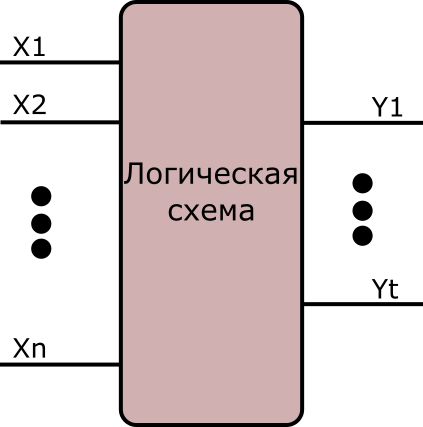
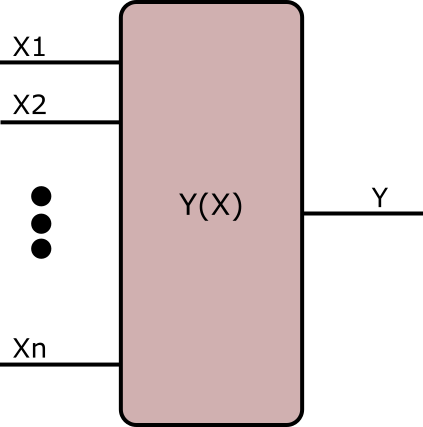

Определение
Булева алгебра — непустое множество A с двумя бинарными операциями + (аналог конъюнкции), • (аналог дизъюнкции), одной унарной
операцией ~ (аналог отрицания) и двумя выделенными элементами: 0 и 1 такими, что для всех a, b и c из множества
A верны следующие аксиомы:
|
a + (b+c) = (a+b) + c
|
a (bc) = (ab) c
|
Ассоциативность
|
|
a+b = b+a
|
ab = ba
|
Коммутативность
|
|
a + ab = a
|
a (a+b) = a
|
Закон поглащения
|
|
a + bc = (a+b) (a+c)
|
a (b+c) = ab + ac
|
Дистрибутивность
|
|
a + ~a = 1
|
a • ~a = 0
|
Дополнительность
|
Первые три аксиомы означают, что (A, •, +) является решёткой. Таким образом, булева алгебра может быть определена как дистрибутивная
решётка, в которой выполнены две последние аксиомы.
Некоторые свойства
|
a+a = a
|
a•a = a
|
|
|
a+0 = a
|
a•0 = a
|
|
|
a+1 = 1
|
a•0 = 0
|
|
|
~0 = 1
|
~1 = 0
|
Дополнение нуля — единица и наоборот |
|
~(a+b) = ~a • ~b
|
~(a•b) = ~a + ~b
|
Законы де Моргана |
|
~~a = a
|
|
Инволютивность отрицания
|
Логические операции
Простейший и наиболее широко применяемый пример такой алгебраической системы строится с использованием множества A, состоящего
всего из двух элементов:
B = {0; 1}
Легко показать, что на данном множестве B можно задать четыре унарные и шестнадцать бинарных отношений и все они могут быть
получены через суперпозицию трёх выбранных операций.
Опираясь на этот математический инструментарий, логика высказываний изучает высказывания и предикаты. Также вводятся дополнительные
операции, такие как эквиваленция ≡ («тогда и только тогда, когда»), импликация → («следовательно»), сложение
по модулю два ⊕ («исключающее или»), штрих Шеффера ↑ («не и»), стрелка Пирса ↓ («не или») и другие.
Логика высказываний послужила основным математическим инструментом при создании компьютеров. Она легко преобразуется в битовую
логику: истинность высказывания обозначается одним битом (0; 1); тогда операция ~ приобретает смысл вычитания
из единицы; + — немодульного сложения; • — умножения; ≡ — равенства; ⊕ — в буквальном смысле сложения по модулю
2 (исключающее или — XOR); ↑ — непревосходства суммы над 1 (то есть
A↑B = (A+B) ⩽ 1).
Логические схемы
Логические схемы — физические устройства, реализующие функции математической логики. Логические схемы подразделяют на 2 класса:
комбинационные схемы (без памяти) и послед овательностные схемы (с памятью). Логические схемы являются основой
любых систем (различных назначений и физической природы) обработки дискретной информации. Логическая схема может
быть представлена в виде многополюсника, на который поступает n входных сигналов и с которого снимается t выходных
сигналов. При этом как независимые (логические) переменные Х1,..., Хn, так и функции Y1,..., Yn, также называются
логическими, могут принимать значения только из одного и того же конечного множества значений.

Логические элементы
Логическая схема, выполняющая одну из элементарных логических операций, называется логическим элементом. Логический элемент
имеет один или несколько входов, на которые поступают сигналы Xi, и один выход. При этом выходной сигнал Y элемента
не должен оказывать обратного воздействия на входной сигнал (однонаправленность логического элемента). Логический
элемент изображают прямоугольником, в верхней части которого обозначают символ операции. Входы показывают с левой
стороны прямоугольника, выходы с правой. Операцию инверсии отмечают кружком у соответствующего выхода. Логическую
схему любой сложности можно построить из любого функционально полного набора логических элементов путём соединения
выходов одних элементов со входами других.
